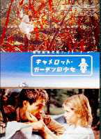
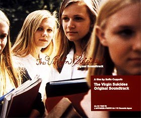
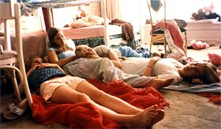
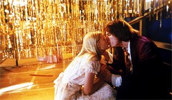
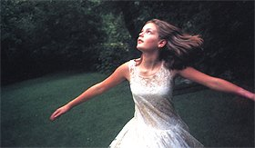

movie...
管理人の趣味の、映画を紹介するページを作っちゃいました。
ここではお気に入りの映画の紹介と私の個人的感想を述べたいと思います。
気が向いたらお暇なときにでもどうぞ読んで下さいね。
もし、おすすめの映画がありましたら、是非教えて下さい。
まずは第一回、この映画から…
＿＿＿＿＿＿＿＿＿＿＿＿＿＿＿＿＿＿＿＿＿＿＿＿＿＿＿＿＿＿＿＿＿
my favorite movies..001
[キャメロットガーデンの少女―Lawn Dogs](1997.英・米/監督:ジョン・ダンカン)
森に住む魔女を信じる少女と、魔女に間違われた青年のおはなし。
あらすじ..........
郊外にある閉鎖的な町、キャメロットガーデン。その町を囲む塀の中にさえいれば、守られた安全のある町だった。
町の中の家は、どの家も裕福で、外から芝刈り夫を雇っている。
ある日、この町に一組の家族が引っ越してくる。
議員選挙当選を目指す父は、裕福で有力者であるなこの町の人々との交流をはかろうとしている。
一人娘のデヴォン（ミーシャ・バートン）は両親に無理矢理「町の子供と友達になれ」とクッキーを持たされ家の外に出される。
自分の都合しか考えない両親のことを見下すかのように、彼女は壁の外、町の外へと出て行ってしまう。
彼女は昔の言い伝えを信じており、心は夢の中へすぐ飛んで行くのだった。
怖い魔女「パピヤガ」の物語にぴったりの森がそこにあった。彼女はためらわずに森へ入る。
森の奥には小屋があり、芝刈りの貧しい青年トレントが住んでいた。
「この町の人間に関わるな」。そんな忠告もあったがトレントはデヴォンとの交流を深めて行く
[感想]＿＿＿＿＿＿＿＿＿＿＿＿＿＿＿＿＿＿＿＿＿＿＿＿＿＿＿
想像していた内容よりも私にはショッキング内容でした。色んな意味で。
10才のミーシャ・バートンがとにかく魅力的で、この映画の雰囲気を彼女がうまく創ってくれます。
少女の顔と女の顔が交互に見える気がします。色気があります。
夢見がちなデヴォンはまだ思春期にはなってないかもしれないけど、とても不安定で繊弱な心が見え隠れします。
態度や言葉では分からない、微かな表情の揺れが心の揺れを鮮明に映し出します。
青年役のサム・ロックウェルの演技も秀逸で、戸惑いや次第に打ち解けていく姿がわざとらしくなく表現しています。
歳の離れた2人の恋愛モノ、なんてちゃちい映画じゃないんです。
彼女達は自分達の事をこう言います。―――「親友」。
ひとこと...
てれび戦士で誰がデヴォン役をやったらハマるかなぁ、なんて事も考えました。
ビジュアル的に似てるのは里穂なんだけど、私はぜひ小百合にやって欲しいと思いました。
ちょっとミステリアスな感じのこの役で、また違う小百合の一面が見られると思います。
年上の男性の心を動かす少女役を、小百合だったら雰囲気を持って演じてくれそうです。
天ドラで是非！…なんてことはないんでしょうね(笑)。

＿＿＿＿＿＿＿＿＿＿＿＿＿＿＿＿＿＿＿＿＿＿＿＿＿＿＿＿＿＿＿＿＿
my favorite movies..002
[バージン・スーサイズ―THE VIRGIN SUICIDES](1999.米/監督・脚本:ソフィア・コッポラ)
"彼女たちはもう大人で、僕たちはただ騒々しいだけのガキだった…。"
あらすじ..........
ヘビトンボが、美しい郊外の街を覆いつくす６月。
リズボン家の美しい５人姉妹の末娘セシリアが聖母マリアの写真を胸に抱きながら、剃刀で腕を切った。
何とか一命を取りとめた彼女に医師が「まだ人生の辛さを知る年にもなっていないのに」と諭すと、
彼女は「でも先生は１３歳の女の子になったことはないでしょ。」という意味深な言葉を残す。
近隣の少年達がこの美しい５人姉妹に抱いていた興味の強さをはっきりと自覚したのは、この自殺未遂がきっかけだった。
姉妹は、セシリア１３歳、ラックス１４歳、ボニー１５歳、メアリー１６歳、テレーズ１７歳。
珍しい年子の５人姉妹は、ふくよかな唇と美しいブロンドの髪を持つ、驚くほどよく似た少女たちだった。
数日後、自宅で開かれたパーティの最中に再びセシリアは窓から身を投じる。
彼女の死後、少年達はそれまで以上に姉妹に神秘的な憧れを感じ始めるが、
奔放な四女のラックスが引き起こした事件を機に、セシリアの死で過敏になっていたリスボン夫人によって
姉妹は自宅での軟禁状態に陥る。
少年達はそんな彼女達をなんとか救い出そうと試みるのだったが・・・。
[感想]＿＿＿＿＿＿＿＿＿＿＿＿＿＿＿＿＿＿＿＿＿＿＿＿＿＿＿
「でも先生は１３歳の女の子になったことはないでしょ。」
あらすじにもありますが、私にとって一番印象的だった言葉です。
五女セシリアの気持ちが痛いほど詰まった言葉なのに、大人には通じません。
現時点で私の一番好きな映画がこの「バージン・スーサイズ」だと言えそうです。
監督のソフィア・コッポラはあの巨匠、フランシスコ・コッポラの娘として有名ですが、
若い女性には、「MILK FED.」というファッションブランドのデザイナーとしての方が知られているかもしれません。
私も彼女のデザインする服が大好きで何着も持っています。
この映画は、女性だからこそ創りえた映画だと思います。
思春期の少女たちの心に澱の様に降り積もる、重い感情。言葉では表せない、湿ったあの感じ。
それを視覚的、聴覚的に見事に表現しています。
男性から見ると不可思議な点もあるかもしれません。（友人は「さっぱり意味が分からない」と言ってました。）
それでもこの雰囲気だけは感じ取る事ができるのではないでしょうか。
明るくはないのだけど、決して暗い映画でもないのです。
薄曇の日の花柄のワンピース、お気に入りのスターのポスターに、床に投げ出されたテディベア。
小物までが彼女達の想いの一部になっています。演出が素晴らしいです。
国は違えど、同じ年頃の少女の気持ちというのは、世界共通なのかもしれません。
全編を通じて流れるアメリカのオールドポップス、ミュージシャンAIRの作り出すBGM、
音楽が素晴らしいのもこの映画の特徴だと思います。
サントラのレコードを買ってしまいました。
ひとこと...
この映画はとても繊細で演じるのは難しいですが、雰囲気は卒業した中田あすみちゃんが
合うんじゃないかな、なんて思います。


＊このページの映画の題以外のすべての文章（見出し文含む）は管理人の個人的感想から書いています。
「変なサブタイトル付けるな！」と思われても責任は取れません(笑)。すみません。